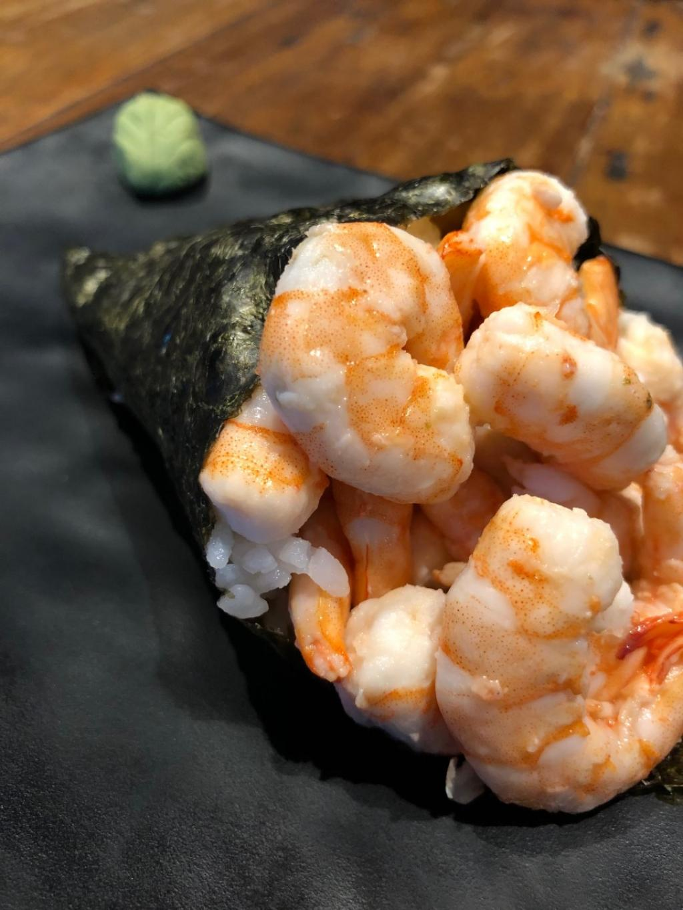

Temaki de Camarão cozido com cream cheese e cebolinha
Enrolado de alga com formato de cone, recheado com camarões, cream cheese, cebolinha e arroz.

Ingredientes
- 175gr de feijão verde;
- 175gr de cenouras;
- 3 rabanetes brancos;
- Sal a gosto;
- 120gr de camarão;
- 2 csp de mirin;
- 4 csp de maionese;
- 2 cch de molho soja;
- 175 g de arroz preparado para sushi;
- 3 folhas de alga nori;
- Pasta de wasabi.
Modo de preparo dos legumes
- Lave o feijão verde e o corte ao meio no sentido do seu comprimento;
- Em seguida descasque as cenouras e os rabanetes, cortando-os em tiras de até 7 centímetros de comprimento e 0,5 de largura. O objetivo é acompanhar o tamanho do camarão para que não fique muito desproporcional;
- Em uma panela coloque água o suficiente para cobrir os legumes, mas só os acrescente depois que ela estiver fervendo;
- Adicione sal a gosto, os legumes e deixe-os cozinhar por um minuto;
- Os legumes devem ficar ao dente para esta receita de temaki de camarão. Assim, a fim que não continuem cozinhando e percam o ponto, coloque-os imediatamente em um recipiente com água fria e gelo;
- Divida todos os legumes em 6 porções. Feito isso já está na hora de preparar o camarão para depois montarmos nosso prato.